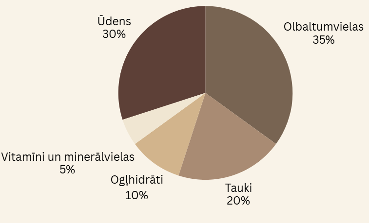

Kaķa barošana un uzturs
Pareiza barošana nodrošina veselību un enerģiju ikdienai. Atrodiet labākos uztura risinājumus savam mīlulim.
Ievads kaķu uzturā
Vai esat kādreiz aizdomājušies, cik daudz jūsu mīlulim jāēd un kura barība ir vispiemērotākā? Kaķu uzturs ir svarīgs faktors, kas ietekmē viņu veselību, aktivitāti un pat dzīves ilgumu. Lai nodrošinātu kaķim labu pašsajūtu, ir nepieciešams izprast viņa uztura vajadzības un izvēlēties atbilstošāko barību.
Šajā sadaļā apskatīsim, kā izvēlēties piemērotāko barību un kādas barošanas metodes nodrošina optimālu uzturu jūsu kaķim.
Nepieciešamās uzturvielas
Kaķiem kā gaļēdājiem ir nepieciešams:
- Liels olbaltumvielu daudzums Kāpēc? Olbaltumvielas ir būtiskas kaķu organisma audu veidošanai un atjaunošanai, kā arī enzīmu un hormonu sintēzei. Kaķiem ir nepieciešamas daudz olbaltumvielas, jo viņi tās izmanto enerģijas ieguvē.
- Mērens tauku daudzums Kāpēc? Tauki dod enerģiju, palīdz uzsūkties taukos šķīstošajiem vitamīniem (A, D, E, K) un ir nepieciešami šūnu membrānu veidošanai.
- Minimāls ogļhidrātu daudzums Kāpēc? Kaķi var izdzīvot bez ogļhidrātiem, jo viņu organisms spēj sintezēt glikozi no olbaltumvielām un taukiem. Tomēr neliels ogļhidrātu daudzums var palīdzēt ar gremošanu.
- Tīrs, svaigs ūdens Kāpēc? ūdens ir nepieciešams visām dzīvības funkcijām, tostarp gremošanai, asinsritei un ķermeņa temperatūras regulēšanai. Kaķi bieži neuzņem pietiekami daudz ūdens, tāpēc ir svarīgi nodrošināt tā pieejamību.
- Vitamīni un minerālvielas Kāpēc? Vitamīni un minerālvielas ir nepieciešami dažādiem fizioloģiskiem procesiem, tostap imūnsistēmas darbībai, nervu sistēmas darbībai un kaulu veselībai. Kaķiem ir nepieciešami specifiski vitamīni, piemēram, A vitamīns.
- Taukskābes un aminoskābes Kāpēc? Taukskābes, piemēram, omega-3 un omega-6 ir svarīgas ādas un kažoka veselībai, kā arī iekaisuma mazināšanai. Aminoskābes, piemēram, taurīns, ir būtiskas sirds un acu veselībai.

Kas kaķiem ir kaitīgs
Bieži vien vēlamies dalīties ar savu māluli un piedāvāt viņam to pašu ēdienu, ko ēdam mēs, taču ne vienmēr tas ir droši. Daudzi pārtikas produkti, kas ikdienā ir droši cilvēkiem, kaķiem var būt ļoti bīstami. Izvairies dot savam kaķim:
- Šokolādi Kāpēc šokolāde ir kaitīga? Šokolāde satur teobromīnu un kofeīnu, kas ir toksiski kaķiem. Jo tumšāka šokolāde, jo toksiskāka. Var izraisīt sirds aritmiju, centrālās nervu sistēmas disfunkciju, lēkmes un pat nāvi....
- Sīpolus un ķiplokus Kāpēc sīpoli un ķiploki ir kaitīgi? Tie veicina eritrocītu dalīšanos un izraisa anēmiju. Var izraisīt vājumu, apātiju, apetītes trūkumu un vemšanu. Indīgas ir visas auga daļas.
- Vīnogas un rozīnes Kāpēc vīnogas un rozīnes ir kaitīgas? Izraisa nopietnus nieru bojājumus, kas var novest pie nieru mazspējas. Pat neliels daudzums var būt toksisks. Sākotnējās pazīmes ietver vemšanu un caureju.
- Jēlas olas Kāpēc jēlas olas ir kaitīgas? Rada risku saindēties ar pārtiku. Olas baltumā esošā olbaltumviela avidīns traucē organismam absorbēt B vitamīna biotīnu.
- Aknas lielos daudzumos Kāpēc aknas lielos daudzumos ir kaitīgas? Var izraisīt A vitamīna toksicitāti, kas var ietekmēt kaķa kaulus un izraisīt osteoporozi.
- Alkoholu Kāpēc alkohols ir kaitīgs? Kaķiem alkohola iedarbība ir daudz smagāka nekā cilvēkiem to mazā auguma dēļ. Var izraisīt nopietnus orgānu bojājumus.
- Kofeīnu Kāpēc kofeīns ir kaitīgs? Līdzīgi kā alkohols, kofeīna iedarbība kaķiem ir daudz spēcīgāka nekā cilvēkiem. Var izraisīt nopietnus veselības traucējumus.
- Pienu Kāpēc piens ir kaitīgs? Pieaugušiem kaķiem bieži ir laktozes nepanesība. Piena uzņemšana var radīt gremošanas traucējumus un diskomfortu.
Populārāko kaķu barību salīdzinājums
Latvijā populārākās kaķu barības ir Whiskas, Sheba un Purina. Lai gan tās ir plaši pieejamas un daudzi saimnieki tās izvēlas cenas un pieejamības dēļ, ir svarīgi izprast šo barību sastāvu un to ietekmi uz kaķa veselību.
| Zīmols | Olbaltumvielas | Tauki | Šķiedrvielas |
|---|---|---|---|
| WHISKAS | 32% | 10% | 5% |
| SHEBA | 35% | 12% | 4% |
| PURINA | 30% | 11% | 6% |
Barošanas biežums
Kaķa barošanas biežums ir atkarīgs no vairākiem faktoriem, piemēram, vecuma, veselības stāvokļa un fiziskās aktivitātes līmeņa. Kaķēni aug strauji, un viņiem nepieciešama biežāka barošana, parasti četras līdz piecas reizes dienā. Pieaugot, viņu ēdienreižu skaits samazinās, un pieaugušam kaķim parasti pietiek ar divām līdz trīs ēdienreizēm dienā. Tāpat kaķiem ar veselības problēmām vai īpašām uztura vajadzībām var būt nepieciešama speciāla barība un biežāka barošana, ko nosaka veterinārārsts. Fiziski aktīvi kaķi, kas daudz skraida un rotaļājas, patērē vairāk enerģijas un attiecīgi arī vairāk barības nekā mierīgāki, mazkustīgāki kaķi.
- Kaķēni (līdz 6 mēnešiem): 4-5 reizes dienā
- Pieauguši kaķi: 2-3 reizes dienā
Barošanas kalkulators
Ievadiet sava kaķa vecumu un svaru, lai uzzinātu ieteicamo barības daudzumu: